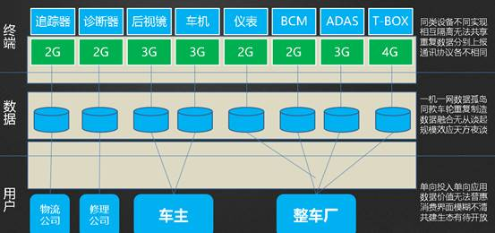

商用车之都------十堰在行动
机械、电子的联合对系统集成商的呼唤 Gauss
很荣幸在深圳汽车电子协会与十堰政府的组织下，参加了这样一个活动。使得我们进一步加深了对十堰的了解，以及机械与电子行业从业兄弟们的交流。十堰与深圳一样是一个外来人口居多的城市，其汽车行业的产业完备度（特别是机械方面的），可以与深圳电子行业的完备度相媲美，应该说更完善......
十堰市政府对电子行业的支持可谓空前，开山建厂，招商引资。商机、政策、情感三箭齐下，自市长以下，各区政府、招商局、经信委、行业协议各尽其力。相关营商平台初步成行，此行受益良多。

广联赛讯是车联网平台建设与业务运营服务商，处在这么一个年轻的行业，参观十堰各个企业时感受到行业的差异和多年沉淀的底蕴，一些企业整洁的车间与严谨的流程和认真的作风，让我们钦佩。我们的团队是一群年轻人组成的团队，公司360名员工，产品与运营人员占据了70%。我们中的很多人来自从互联网和传统的电子领域，相互有很多可相互补充的地方。
我们的车联网数据运营，做的就是上图绿色方框中的事情，里面最最核心的就是数据，各种各样的数据，车辆的、人的、店面的、交易、维修、违章等等。我们的车联网服务覆盖买车（虎哥贷）、用车（嘀嘀虎、按天保、驾宝）、卖车各个环节， 在十堰在新能源汽车联盟秘书长冯军的介绍下，看到智能制造上对机床设备也从金融（分期购买）、租赁（先使用再购买）、维修回收（贴身维修置换）等角度实现了全生命周期的管控。赞圣伟屹的郑总！

智能汽车让我们可以获得以往不能获得的信息------庞大的行为数据，这些数据有价值的，某种意义上说，它就等于钱，所以我们看到很多OEM在打造智能汽车的同时建立了自己的数据中心。但是数据真正要产生价值，必须是可以运营的，简单来说，需要确保数据具备融合的能力，具备触达用户的通道，有合理的商业模式能够让大家共建共享。有幸拜访了菲亚特的郑总，商用车的人、车、路、网、货的运营理念在融合数据的基础支撑下，必然能够取得成功。期待后面能够在救援车的运营、车载智能设备以及商用车的数据转化上有共同合作的机会！
总体而言，我们认为要让数据产生价值，或者说产生尽可能大的价值，需要三个条件：一是数据平台，开放的统一的规模化的数据平台；二是用户通道，数据具备融合的能力，并能有效触达到用户；三是商业生态，开放合作共建共享的商业生态，按劳取酬，而不是垄断与封闭。十堰市给与低速电动车颁发拍照的确是个创举，杨书记为企业发展的奔跑相信陶总应该最有体会：），我们希望智慧交通也可以分块在十堰获得机会。
在数据运营商我们有一些思路分享，期待大家参与共同探讨。我首先讲讲平台的，平台最核心的就是数据中心。
他有三个界面，面向终端用户的数据采集与消息推送界面；面向开发者的数据分析和加工界面；面向客户的数据消费界面。

当前的问题是一机一网一用户，就像上图画的一样，我们的终端、数据平台、服务的用户是一一对应的，没有真正共享起来。从绿色的角度来看，这个很不合理，但是这就是现状。在这种格局下，我们的数据中心不共享，是封闭的，自身价值有效，也不具备规模的条件，更不可能切实做大其价值。
但是如果一旦把这个突破，我们会遇到其他的挑战，我这里有一个数据，是我们用户规模大概在60万同时在线事后的数据，每天新增400GB，我只存了一年旧有仅150T的数据，按照公司当前展开的业务，我至少要存3年；如果按照OEMs的概念，我想应该考虑不删档的方案，至少7年？大家可以计算下，我觉得有点规模的，应该对齐到1000万来看，那时数据会是什么规模，要知道我当前还没有环境和详细车辆数据。

第二个我想说的是用户的通道，我们认为有两条线必须控制住，即采集数据和使用数据。这些都有很大挑战，采集的数据要有效的定义和验证，而后是存储、加工和呈现。使用数据要定向投放并跟踪用户对数据的动作，以有效支撑数据服务的运作。

维持数据通道，需要丰富的服务内容，保障用户使用的高频度。这个与设计场景化产品是相辅相成的。通道还必须保障数据的私密性和安全性，开放的多方授权机制可能是必须的。我们的数据应用必须获得数据所有者（用户）的授权，并有信赖的监督机构（OEMs）对供需方鉴权。
最后一个是商业生态，我们认为车联网服务运营商可优化未如下的结构，即将运营商分为增值与基础两个运营角色。基础运营商承担授权中心的角色，确保智能汽车的安全型、可靠性；增值业务运营商负责搞气氛，活跃用户和探索新模式下的用户新的业务需求。

我们认为未来，数据中心会像当前的银行系统一样，从县市到省、再到全国。他们也会从点到线，最终汇合于一体，服务于整个汽车生命周期，包括销售、维修、保险、金融等生态领域。

实现需要我们共同定义商业环境，我们看到在一些局部领域，已经出现制造商、电信运营商、内容提供商、解决方案和代理商的协同，未来这些协同一定会进一步放大，各尽其力，专注核心竞争力，共同推进智能汽车的发展。
广联赛讯围绕数据服务运营的工作中，走过很多弯路，也取得了一点进展，截至到2015年我们的服务运营收入占比已经达到60%以上，方案不再是公司的主营收入，相信今年会有更大比例来之服务运营收入，其绝对数额也会有更大增长幅度。我们如下几块领域的能力期待能给同行带来价值，共同进步。
一是数据产品，包括面对车主、保险、融资租赁，维修，二手车和车队等领域的数据产品加工和分析模型。
二是开放平台，我们提供终端采集协议，SDK，APP以及管理工作界面。可帮助快速完成车联网的系统建设，集成丰富的内容给你和建立完整的服务运营能力。

三是经销商服务，我们围绕保客户的主线。开发了包括店面微信公众号，售前售后服务代表APP，驾宝，嘀嘀虎微信在内的系统，支撑经销商的业务开展和主动客户关怀。

四是保险服务，我们提供保险公司需要的行车行为数据，辅助保险公司定义新的产品，提供可基于场景的保险产品开发能力，共同推进UBI的发展，实现车主与保险公司的共赢互惠。
五是金融产品与风控能力，这个不赘述，我们的平台控制坏账在行业极低的水平线下，这让我们可以尝试更多的金融创新。详细可检索我们的关键字：虎哥贷。
最后，我们以非常开放的心态与大家合作，包括OEMs和广大汽车零配件供应商们。我们可以将我们的内容、方案集成能力、售前售后渠道、客户服务和服务运营能力向大家开放，只有规模化的运营，才能迎来美好的明天，期待获得共赢。感谢深圳电子工业协会与十堰市政府！
更多信息，请关注：